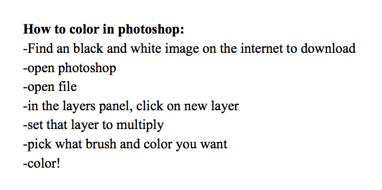
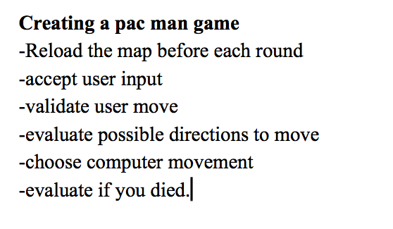

The purpose of this lab was to get a basic understanding of how to tur a list into comments in code. It will also help us later on when problem solving
Personally, I had a rough time fulling understanding how and what to list. It took going over the in class examples for me to understand.
I was able to complete the lab with almost no difficulty.
 